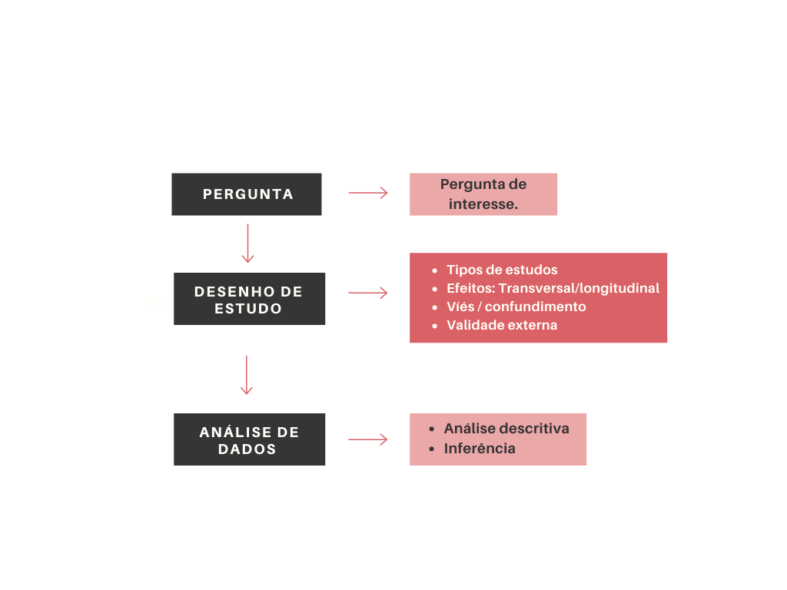

Análise de sobrevivência e
confiabilidade
Introdução
Prof. Paulo Cerqueira Jr
Faculdade de Estatística - FAEST
Instituto de Ciências Exatas e Naturais - ICEN
https://github.com/paulocerqueirajr


Introdução
Introdução
Pergunta da disciplina:
Para que?
Porque?
Pesquisa científica

Pesquisa científica
Pergunta de Interesse;
Desenho do Estudo / Coleta dos Dados / Observar;
Análise Estatística: Modelar / Predizer;
Conhecer o Banco de Dados;
Análise Descritiva (cada variável separadamente);
Análise Bivariada (resposta vs cada covariável);
Modelo de Regressão (paramétrico ou não-paramétrico);
Inferência: Clássica ou Bayesiana;
Resposta da Pergunta/Interpretação dos Resultados.
Pesquisa científica
Pergunta de Interesse:
Comparação de Grupos.
Identificação de Fatores de Risco ou Prognóstico.
Estimação/Predição.
Pesquisa científica - Exemplo
Dados de Hepatite (Gregory et al., 1976)
Pacientes com Hepatite Viral Aguda.
Objetivo: investigar o efeito da terapia com esteróide.
Estudo Clínico Aleatorizado.
Vinte e nove pacientes com hepatite foram aleatorizados para receber placebo ou o tratamento com esteróide.
Cada paciente foi acompanhado por 16 semanas ou até a morte (evento de interesse) ou até a perda de acompanhamento.
Pesquisa científica
Desenhos de estudos:
Tipos de Desenho de Estudo.
Efeito Transversal vs Longitudinal.
Confundimento e Viés.
Validação (externa) do Estudo.
Pesquisa científica
Perguntas pertinentes
Os grupos são comparáveis?
As variáveis de confusão foram medidas/controladas?
É possível alocar tratamento às unidades amostrais de forma aleatória?
Os erros de medição podem ser medidos e controlados?
As perdas (dados perdidos) podem viciar os resultados?
Podemos estender os resultados para outros estudos?
Pesquisa científica
Tipos de estudos
Estudos Transversais;
Estudos Longitudinais:
- Observacionais;
- Coorte (prospectivo) - Avaliação de fatores que acarretam no evento;
- Caso-controle (retrospectivo)- Avaliação de fatores que acarretaram no evento;
- Experimentais: Ensaio Clínico.
- Observacionais;
Pesquisa científica
Desenho e Planejamento de Estudos
Análise de Sobrevivência: o tipo de estudo é LONGITUDINAL
Coorte (observacional);
Clínico Aleatorizado (experimental).
Na área industrial:
- Teste de campo/laboratório;
- Teste de vida acelerado;
- Teste de degradação.
Estudos longitudinais
Características básicas
Estudo de Coorte/Teste Industrial
- Estudos observacionais;
- Grupos de comparação (braços da coorte): usualmente definido pela presença ou não da covariável de interesse;
- Podem ser prospectivos (forma mais comum) ou retrospectivo/histórico.
Estudo Clínico Aleatorizado
- Presença de grupos de comparação.
- Estudos experimentais. Isto é, a intervenção do investigador consiste em aleatorizar indivíduo ao grupo;
- Vantagem: controla por fatores de confusão medidos e não medidos.
Viés na coleta de dados
- Desvio da verdade por defeito no delineamento ou na condução de um estudo.
- Erro sistemático no delineamento, condução e análise de um estudo resultando em erro na estimativa da magnitude da associação entre covariáveis e a resposta de interesse.
Fontes de viés
- Fatores de confusão.
- Viés de Seleção: alocação das unidades de análise privilegia subgrupos com probabilidade diferenciada de apresentar a resposta. Exemplo: Perda de acompanhamento em estudos longitudinais.
- Viés de Informação: erro sistemático na classificação/medição das variáveis sob estudo.
- Etc.
Fator de confusão
Definição: Um terceiro fator que está associado tanto com a exposição/covariável quanto com a resposta/doença, mas não se encontra no elo causal entre eles.

- Duas condições para caracterizar um fator de confusão:
- Ser associado com a covariável/exposição sem ser sua consequência.
- Estar associado com o resposta/desfecho independente da exposição.
Fator de confusão - Exemplo
Café e Câncer de Pulmão
Hipótese inicial: Observa-se que pessoas que bebem muito café têm maior incidência de câncer de pulmão.
Associação bruta: Café (exposição) → Câncer de pulmão (desfecho).
Fator de confusão: Tabagismo.
Por que o tabagismo é um confundidor?
- Associação com a exposição (café):
- Fumantes tendem a consumir mais café (ex.: pausas para café e cigarro).
- Fumantes tendem a consumir mais café (ex.: pausas para café e cigarro).
- Associação com o desfecho (câncer de pulmão):
- O cigarro é causa direta de câncer de pulmão, independente do café.
- Associação com a exposição (café):
Efeito do confundidor:
- Sem controlar pelo tabagismo, a análise sugeriria erroneamente que o café causa câncer de pulmão.
- Na realidade, a associação é espúria — o tabagismo é a verdadeira causa.
- Sem controlar pelo tabagismo, a análise sugeriria erroneamente que o café causa câncer de pulmão.
Estrutura dos dados
Exemplo
Identificar a estrutura de dados é um fator muito importante.
Resposta:
- Contínua - Análise de Sobrevivência (presença de censura);
- Categórica, Discreta.
Covariáveis:
- Contínua ou categórica.
Leucemia e Mortalidade
Exemplo
- Pacientes com Leucemia (Feigl e Zelen, 1965).
- Livro: Cox e Snell (1981, Applied Statistics: Principles and Examples.), p. 148.
- Y: tempo do diagnóstico da leucemia até a morte (em semanas)
- Uma única covariável X (log10 da contagem de células brancas no diagnóstico).
- Objetivo: descrever a (possível) relação entre Y e X.
Analise estes dados utilizando o seu conhecimento de estatística (regressão linear/inferência).
Leucemia e Mortalidade
Exemplo
Observamos uma redução no tempo de morte com o aumento do \(\log_{10}\) leucócitos.
Podemos ajustar uma modelo de regressão?
Qual?
Leucemia e Mortalidade
Exemplo
Modelo 1: regressão linear
\[E(Y)=\beta_{0}+\beta_{1}X.\]Modelo 2: regressão loglinear
\[\log E(Y)=\beta_{0}+\beta_{1}.X\]Modelo 3: regressão loglinear exponencial
\[E(Y)=\exp(\beta_{0}+\beta_{1}X).\]
Leucemia e Mortalidade
Exemplo
Ajustamos os três modelos.
Qual apresentou melhor ajuste?

Análise de sobrevivência
Análise de sobrevivência
Características
Definição: Conjunto de técnicas que visam estudar o tempo até a ocorrência de um evento de interesse.
- Resposta: tempo até a ocorrência de um evento de interesse:
- tempo inicial (linha de base);
- escala de medida;
- definição do evento.
- Censura: Observações que de tempo que não representam a variável resposta.
Análise de sobrevivência
Tipos de censura
Censura à direita: tempo de falha (evento) a direita do tempo observado. (mais comum)
- Tipo I: é aquela em que o estudo será terminado após um período pré-estabelecido de tempo.
- Tipo II: é aquela em que o estudo será terminado após ter ocorrido o evento de interesse em um número pré-estabelecido de indivíduos.
- Tipo aleatória: é o que mais ocorre na prática médica.
Censura à esquerda: tempo observado (registrado) maior que o tempo de falha (evento).
Censura Intervalar: o evento ocorreu em um intervalo de tempo.
Mecanismo de censura pode ser classificado como: informativo ou não informativo.
Truncamento: condição que exclui certos indivíduos do estudo.
- Truncamento à Esquerda.
- Truncamento à Direita.
Análise de sobrevivência
Tipos de censura

Análise de sobrevivência
Escala do tempo
- Tempo de duração: típica.
- Idade.
- Calendário.
- Carga (engenharia).
Análise de sobrevivência
Escala do tempo

Análise de sobrevivência
Exemplos de variável resposta
- tempo do diagnóstico da doença até a morte do paciente ou da sua cura;
- tempo até a recorrência de crimes ou prisões;
- tempo até a ocorrência do primeiro sinistro em uma empresa de seguros;
- mudança de empregos, promoções ou aposentadorias;
- mortalidade infantil, casamento, separações ou migrações;
- tempo até a quebra/falha de um componente elétrico.
Dados de Hepatite (Gregory et al., 1976)
- Pacientes com Hepatite Viral Aguda;
- Objetivo: investigar o efeito da terapia com esteróide;
- Estudo Clínico Aleatorizado;
- Vinte e nove pacientes com esta doença foram aleatorizados para receber um placebo ou o tratamento com esteróide.
- Cada paciente foi acompanhado por 16 semanas ou até a morte (evento de interesse) ou até a perda de acompanhamento.
Dados de Hepatite (Gregory et al., 1976)
- Os tempos de sobrevivência observados, em semanas, para os dois grupos (+ indica censura).

Como incluir na modelagem de regressão os dados censurados?